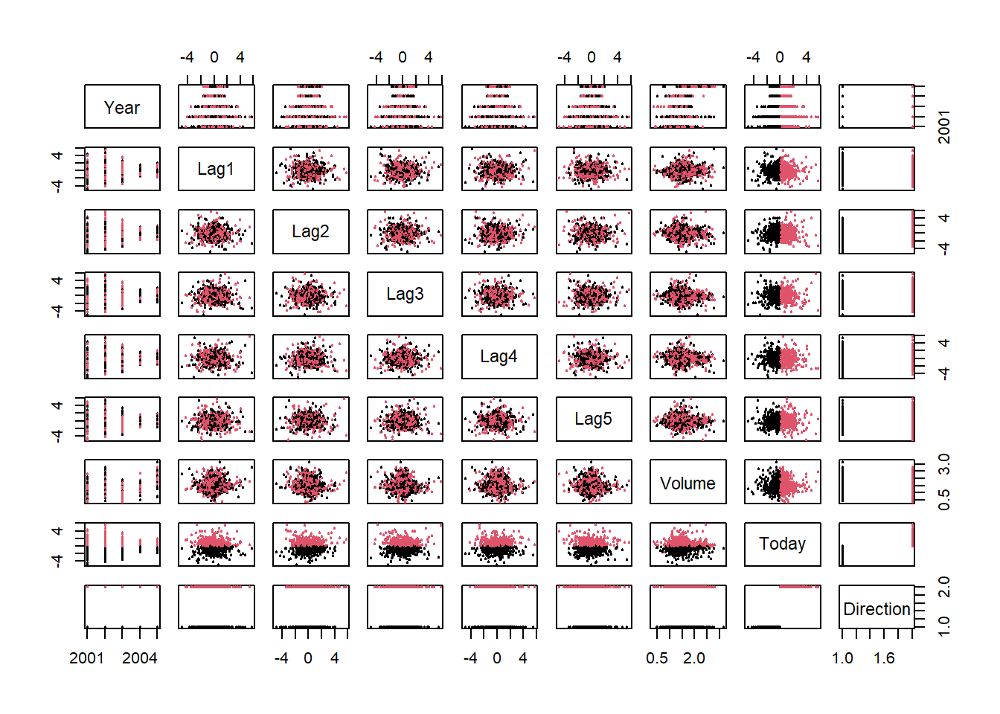

# Load ISLR library
require(ISLR)Loading required package: ISLRWarning: package 'ISLR' was built under R version 4.2.3# Check dataset Smarket
?Smarketstarting httpd help server ... donenames(Smarket)[1] "Year" "Lag1" "Lag2" "Lag3" "Lag4" "Lag5"
[7] "Volume" "Today" "Direction"summary(Smarket) Year Lag1 Lag2 Lag3
Min. :2001 Min. :-4.922000 Min. :-4.922000 Min. :-4.922000
1st Qu.:2002 1st Qu.:-0.639500 1st Qu.:-0.639500 1st Qu.:-0.640000
Median :2003 Median : 0.039000 Median : 0.039000 Median : 0.038500
Mean :2003 Mean : 0.003834 Mean : 0.003919 Mean : 0.001716
3rd Qu.:2004 3rd Qu.: 0.596750 3rd Qu.: 0.596750 3rd Qu.: 0.596750
Max. :2005 Max. : 5.733000 Max. : 5.733000 Max. : 5.733000
Lag4 Lag5 Volume Today
Min. :-4.922000 Min. :-4.92200 Min. :0.3561 Min. :-4.922000
1st Qu.:-0.640000 1st Qu.:-0.64000 1st Qu.:1.2574 1st Qu.:-0.639500
Median : 0.038500 Median : 0.03850 Median :1.4229 Median : 0.038500
Mean : 0.001636 Mean : 0.00561 Mean :1.4783 Mean : 0.003138
3rd Qu.: 0.596750 3rd Qu.: 0.59700 3rd Qu.:1.6417 3rd Qu.: 0.596750
Max. : 5.733000 Max. : 5.73300 Max. :3.1525 Max. : 5.733000
Direction
Down:602
Up :648
# Create a dataframe for data browsing
sm=Smarket
# Bivariate Plot of inter-lag correlations
pairs(Smarket,col=Smarket$Direction,cex=.5, pch=20)
# Logistic regression
glm.fit=glm(Direction~Lag1+Lag2+Lag3+Lag4+Lag5+Volume,
data=Smarket,family=binomial)
summary(glm.fit)
Call:
glm(formula = Direction ~ Lag1 + Lag2 + Lag3 + Lag4 + Lag5 +
Volume, family = binomial, data = Smarket)
Deviance Residuals:
Min 1Q Median 3Q Max
-1.446 -1.203 1.065 1.145 1.326
Coefficients:
Estimate Std. Error z value Pr(>|z|)
(Intercept) -0.126000 0.240736 -0.523 0.601
Lag1 -0.073074 0.050167 -1.457 0.145
Lag2 -0.042301 0.050086 -0.845 0.398
Lag3 0.011085 0.049939 0.222 0.824
Lag4 0.009359 0.049974 0.187 0.851
Lag5 0.010313 0.049511 0.208 0.835
Volume 0.135441 0.158360 0.855 0.392
(Dispersion parameter for binomial family taken to be 1)
Null deviance: 1731.2 on 1249 degrees of freedom
Residual deviance: 1727.6 on 1243 degrees of freedom
AIC: 1741.6
Number of Fisher Scoring iterations: 3glm.probs=predict(glm.fit,type="response")
glm.probs[1:5] 1 2 3 4 5
0.5070841 0.4814679 0.4811388 0.5152224 0.5107812 glm.pred=ifelse(glm.probs>0.5,"Up","Down")
attach(Smarket)
table(glm.pred,Direction) Direction
glm.pred Down Up
Down 145 141
Up 457 507mean(glm.pred==Direction)[1] 0.5216# Make training and test set for prediction
train = Year<2005
glm.fit=glm(Direction~Lag1+Lag2+Lag3+Lag4+Lag5+Volume,
data=Smarket,family=binomial, subset=train)
glm.probs=predict(glm.fit,newdata=Smarket[!train,],type="response")
glm.pred=ifelse(glm.probs >0.5,"Up","Down")
Direction.2005=Smarket$Direction[!train]
table(glm.pred,Direction.2005) Direction.2005
glm.pred Down Up
Down 77 97
Up 34 44mean(glm.pred==Direction.2005)[1] 0.4801587#Fit smaller model
glm.fit=glm(Direction~Lag1+Lag2,
data=Smarket,family=binomial, subset=train)
glm.probs=predict(glm.fit,newdata=Smarket[!train,],type="response")
glm.pred=ifelse(glm.probs >0.5,"Up","Down")
table(glm.pred,Direction.2005) Direction.2005
glm.pred Down Up
Down 35 35
Up 76 106mean(glm.pred==Direction.2005)[1] 0.5595238# Check accuracy rate
106/(76+106)[1] 0.5824176# Can you interpret the results?